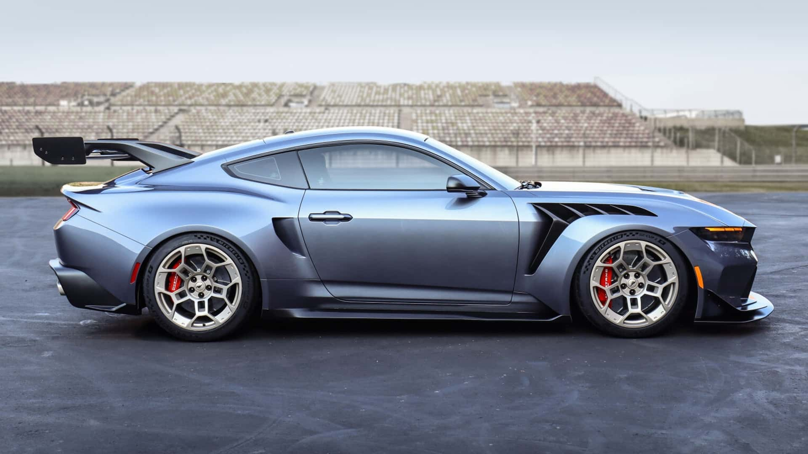

O Ford Mustang GTD 2025 consolidou sua posição como um dos supercarros mais rápidos do mundo ao registrar uma volta oficial de 6 minutos e 52,072 segundos no icônico circuito do Nürburgring Nordschleife, na Alemanha. Esse tempo coloca o Mustang GTD como o quarto carro de produção mais rápido a completar a lendária pista de 20,8 km, superando sua própria marca anterior em mais de 5 segundos.
Equipado com um motor V8 supercharged de 5,2 litros, o Mustang GTD entrega impressionantes 815 cavalos de potência e 664 lb-ft de torque, acoplado a uma transmissão automática de dupla embreagem e 8 marchas. O carro foi desenvolvido com base na experiência da Ford no automobilismo, especialmente no programa Mustang GT3, incorporando tecnologias como freios de carbono-cerâmica Brembo, suspensão semiativa e aerodinâmica ativa, além de um chassi com rigidez torsional aprimorada.

A distribuição de peso próxima a 50/50, a carroceria em fibra de carbono e o sistema de escapamento em titânio Akrapovič contribuem para um desempenho equilibrado e sonoro marcante. O Mustang GTD acelera de 0 a 100 km/h em cerca de 3,3 segundos e atinge velocidade máxima de 325 km/h (202 mph).
A volta recorde foi realizada pelo piloto da Multimatic Motorsports, Dirk Müller, em condições ideais de pista. A equipe Ford analisou dados da tentativa anterior para aprimorar o carro em diversos aspectos, incluindo a calibração do motor, o sistema de tração, o ABS e a aerodinâmica, resultando em uma performance ainda mais agressiva e eficiente. Significado do Recorde para a Ford.
Essa ação é irreversível.